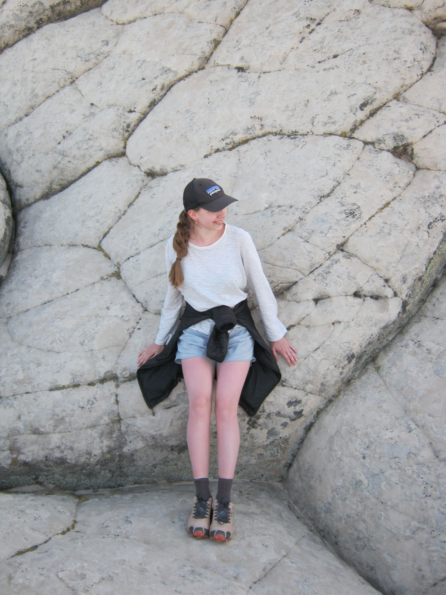

Hej!
My name's Iza, and I'm a multidisciplinary design student transitioning to the University of Washington where I will be specializing in environmental design and sustainability. Typically, my work sits at the intersection of business, technology, and the environment.
Alongside my design studies, I've taken courses in product development, strategy, market analysis, entrepreneurship, and branding, as well as gained experience within non-profit work through a variety of immersive positions.
I'm interested in how design can support community and environmental integrity, and how those ideas connect to accessibility and user experience. I like exploring these questions through different media and contexts.
Originally from Poland, but based in Seattle, Washington (and an avid traveler), I'm drawn to sustainability, branding, and community-centric design practices. With an eye for aesthetics, I have always done photography and other creative endeavors on the side.
I'm always looking to grow through collaborative, engaging, interdisciplinary work stemming from real-life problem spaces.

Digital Tools
- Adobe Illustrator
- Adobe InDesign
- Adobe After Effects
- Adobe Photoshop
- Figma
- Miro
- Final Cut Pro
- Premier Pro
- Rhino 8
- Notion
- Claude Code
Physical Tools
- 3d Printer
- Laser Cutter
- CNC Machine
- Screen Printer
- Digital Camera
Education
Experience
Achievements
- Animation featured at Mayrit Bienal '26
- Photography reposted by VSCO
- Works Featured at IE University exhibition
- Selected design Jury for student presentations
- Exhibition proposal selected
Short Courses
- Squak Art Studio: Fine Art Drawing (6 months)
- Rysunek i Architektura: Japanese Art Techniques
- Minerva University: Strategic Learning and Growth
- Minerva University: Adv. Composition and Expressive Clarity
- The Great Courses: A History of Eastern Europe
- Languagebird: Italian Culture
- Teaching is Fire: Public Speaking
- Teaching is Fire: Writing Composition